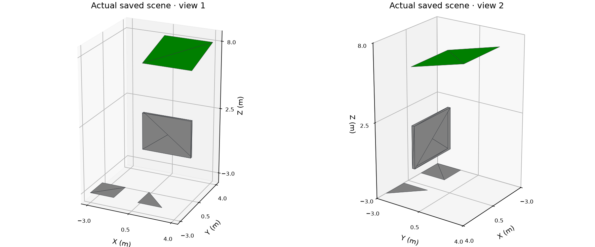

CLEAN-ROOM RVT RESEARCH · LOCAL TECHNICAL REPORTCombined native model: saved geometry and application data
3 owners4 saved mesh primitives
17 trianglesread back from verified RVT
2,300 source rowsbyte-identical preservation

Actual native saved vertices and triangles; feet converted to metres (× 0.3048). Each primitive uses its decoded source-style viewport RGBA. Normals are archived unchanged. Colors are reader viewport interpretations, not Autodesk rendering.
| Named level / native ID | Elevation | Application ID |
|---|
| Basement Δ / 2746 | -3 m | basement |
| Level 1 / 1916 | 0 m | ground |
| Roof Ω / 2747 | 7 m | roof |
| Saved owner | Category / level relationship | Exact application properties |
|---|
Ground wall
wall-a · native 2748
12 triangles · channels 101/102/103 | wall
Application level: Level 1
Native associated-level: -1 | {
"dimensions": {
"height": 3,
"length": 4,
"width": 0.2
},
"material": "concrete",
"reviewed": true
} |
Basement open panels Δ
open-panels · native 2749
3 triangles · channels 101/102/103 | generic
Application level: Basement Δ
Native associated-level: -1 | {
"nested": {
"optional": null,
"tags": [
"open",
"disconnected",
"Δ"
]
}
} |
Roof surface Ω
roof-a · native 2750
2 triangles · channels 101/102/103 | roof
Application level: Roof Ω
Native associated-level: -1 | {
"notes": "Independent surface, no solid volume claim",
"slope": 0.25
} |
Evidence boundary: Chrome screenshot of a generated local report, not Autodesk UI. Options, lifecycle defaults and DirectShape category-registration policy remain hypotheses. Named levels are native elements; requested element-to-level relationships and application properties are stored in our own extensible-storage schema. Native associated-level remains unset (-1). Autodesk opening, regeneration and re-saving are untested. Ordinary public IFC export skips DirectShape.
Verified candidate SHA-256: 56b5b5274c3f75681e5884d84424fc1678f9f63f308accc317e2c8373a9ca8c5
Native report SHA-256: 6fb783a407c74953a24f0d8fe2f34c0fe1fe9329c2e98e3c35563551a5181af7